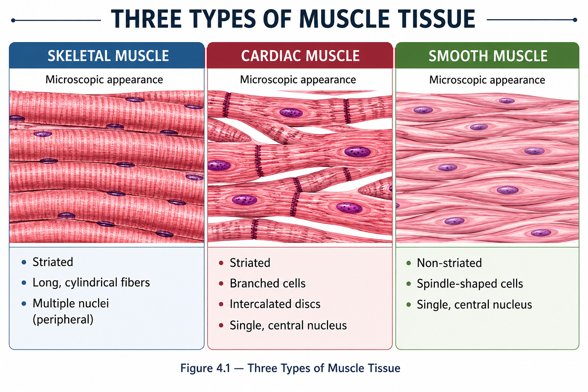

The human body contains three major types of muscle tissue: skeletal, cardiac, and smooth muscle. Each type has a different location, structure, control, and role in the body.
📑 Table of Contents
🎯 Learning Objectives
After completing this lesson, you should be able to:
- Identify the three major types of muscle tissue.
- Describe the main location of each muscle type.
- Distinguish voluntary and involuntary muscle control.
- Recognize striated and non-striated muscle tissue.
- Describe the basic function of skeletal, cardiac, and smooth muscle.
- Compare the three muscle types using their major structural and functional features.
📖 Introduction
Muscle tissue is a specialized tissue whose cells are capable of contraction and force production.
Muscle contraction helps produce body movement, maintain posture, pump blood, and move substances through internal organs and passageways.
The human body has three major types of muscle tissue: skeletal muscle, cardiac muscle, and smooth muscle.
📌 Simple Idea
Three types → Three locations → Different control → Different functions
🔬 Three Types of Muscle Tissue
Skeletal, cardiac, and smooth muscle are specialized for different jobs throughout the body.

Skeletal Muscle
Mainly attached to bones and responsible for voluntary body movement.
Cardiac Muscle
Found in the heart and responsible for pumping blood.
Smooth Muscle
Found mainly in internal organs and produces involuntary movement.
💪 Skeletal Muscle
Skeletal muscle is mainly attached to bones and produces voluntary body movements.
📌 Remember
Skeletal = Movement + Voluntary + Striated
❤️ Cardiac Muscle
Cardiac muscle is found only in the heart. Its coordinated contractions pump blood through the circulatory system.
📌 Remember
Cardiac = Heart + Involuntary + Striated
🌀 Smooth Muscle
Smooth muscle is found mainly in the walls of internal organs and blood vessels. It produces involuntary movements that help move or regulate substances inside the body.
📌 Remember
Smooth = Internal organs + Involuntary + Non-striated
⚖️ Comparing the Three Types
The three muscle tissues can be distinguished by their location, control, appearance, and main function.
| Feature | Skeletal | Cardiac | Smooth |
|---|---|---|---|
| Major location | Bones | Heart | Internal organs |
| Control | Voluntary | Involuntary | Involuntary |
| Striations | Yes | Yes | No |
| Main role | Body movement | Pumps blood | Moves substances |
🎛️ Control & Striations
Two useful features for distinguishing muscle tissues are whether their activity is under voluntary control and whether their cells show visible striations.
🎛️ Voluntary
Muscle activity that can generally be controlled consciously.
Skeletal muscle🔄 Involuntary
Muscle activity that occurs without conscious control.
Cardiac + Smooth📏 Striated
Muscle cells show a visible banded appearance under the microscope.
Skeletal + Cardiac➖ Non-striated
Muscle cells do not show the same visible banded appearance.
Smooth🧠 Quick Pattern
Skeletal → Voluntary + Striated
Cardiac → Involuntary + Striated
Smooth → Involuntary + Non-striated
📌 Key Differences
Mainly moves the skeleton and is under voluntary control.
Forms the muscular wall of the heart and pumps blood.
Controls movement of substances through many internal organs.
🧠 Quick Revision
✅ There are three major types of muscle tissue: skeletal, cardiac, and smooth.
✅ Skeletal muscle is mainly attached to bones.
✅ Skeletal muscle is voluntary and striated.
✅ Cardiac muscle is found in the heart.
✅ Cardiac muscle is involuntary and striated.
✅ Smooth muscle is found mainly in internal organs and blood vessels.
✅ Smooth muscle is involuntary and non-striated.
✅ Skeletal muscle mainly produces body movement and helps maintain posture.
✅ Cardiac muscle pumps blood through the heart.
✅ Smooth muscle helps move and regulate substances inside the body.
❓ Practice Quiz
Ready to test your understanding of the three types of muscle tissue?
Complete the quiz to reinforce the key differences between skeletal, cardiac, and smooth muscle.